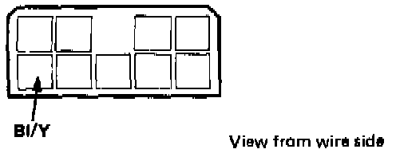
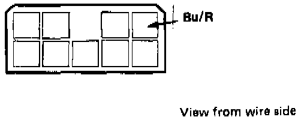
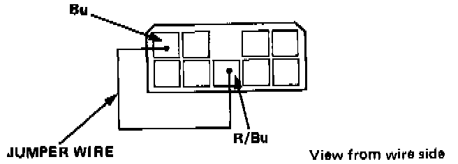

Recirculation Control Motor Troubleshooting
HEATER - ELECTRICAL TROUBLESHOOTINGUse the digital Multimeter KS-AHM-32-003 to check.
Recirculation control motor troubleshooting
1. Check the No. 22 and 26 fuses (engine compartment) and No. 10 fuse (underdash fuse box).

2. Remove the front part of the connectors console and check the condition of both connector of the function control unit connector, then check battery voltage at the Bl/Y terminal voltage.
With the ignition switch ON: There should be battery voltage.
- If there is battery voltage, go to step 3.
- If not, there is an open in the Bl/Y wire between the No. 10 fuse and the function control unit.

3. Disconnect the function control amplifier connector, then connect the Bu/R terminal to ground.
With the ignition switch ON; the recirculation control motor should start turning.
- If the recirculation control motor starts, go to step 4.
- If the recirculation control motor does not start, ground the Bu/R wire at the recirculation control motor connector.
- If it now starts, there is an open in the Bu/R wire.
- If it still does not start, check for battery voltage (indicates a faulty recirculation control motor) or an open in the Bl/Y wire to the motor connector.

4. With the connection in place, attach a jumper wire between the Bu and R/Bu terminal at the function control unit connector.
With the ignition ON; the recirculation control motor should start.
- If the motor does not start, the function control unit is faulty.
- If the motor starts, there is an open in the re- circulation control motor slip rings, FRESH/REC switch or related wiring.